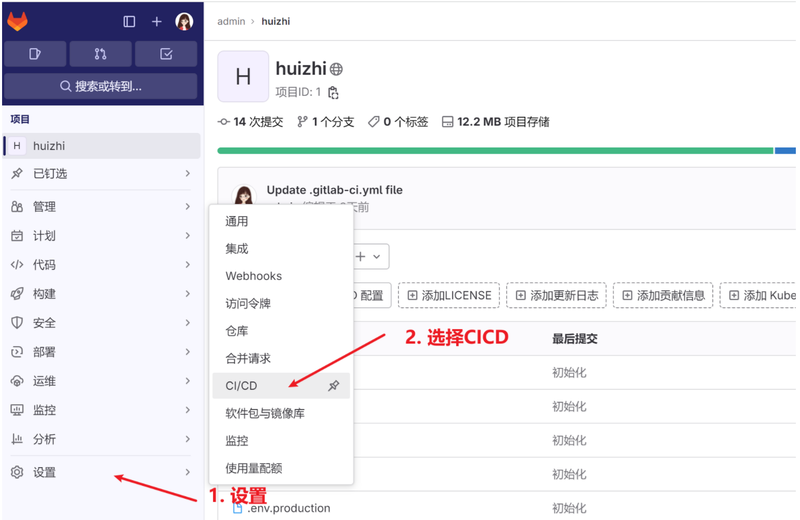

前端项目如何部署上线
HaoTian · 2024-09-01 15:21:24
以前大部分中小型公司前端部署比较简单，通过脚手架命令 npm run build 打包前端代码，生成 dist 文件夹；将 dist 文件夹丢给后端开发人员集成到后端工程代码中一起发布。现在前后端分离的项目中，前端项目单独部署。利用 nginx 起一个 web 服务器，将 dist 文件夹放到指定路径，配置 nginx 访问路径，对于请求接口使用 proxy 代理进行转发，解决跨域问题。比较规范的大公司，前端部署会采用 CI/CD，Jenkins 进行自动化部署。如果代码使用 gitLab 管理，使用 CI/CD 部署会更加简单。本文主要介绍 CI/CD 自动化部署方案。
持续集成持续部署(CI/CD)
CI/CD 是一种软件开发实践，它将软件开发过程自动化，以提高效率和质量。CI/CD 代表 "持续集成"（Continuous Integration）和 "持续部署"（Continuous Deployment）。
持续集成（CI）：
- 开发者频繁地将代码变更合并到主分支。
- 每次代码变更后，自动化的构建和测试流程会运行，确保代码变更不会破坏现有的功能。
- 这有助于快速发现和修复错误，减少集成问题。
持续部署（CD）：
- 自动化地将代码变更部署到生产环境。
- 这要求高度的自动化测试和监控，以确保部署的代码是稳定的。
CI/CD 流程通常涉及以下工具和步骤：
- 版本控制系统：如 Git，用于管理代码变更。
- 构建工具：如 Maven、Gradle、Jenkins 等，用于自动化构建过程。
- 自动化测试：确保代码变更不会引入新的错误。
- 部署工具：如 Ansible、Chef、Puppet 等，用于自动化部署过程。
- 监控和日志：监控应用的性能和健康状态，记录日志以便于问题追踪。
CI/CD 流程可以帮助团队提高软件交付的速度和质量，减少人为错误，加快问题解决的速度。开发人员只需将代码提交到版本库，剩下项目构建、测试、部署都交给工具完成。

GitLab 安装配置
GitLab 提供了持续集成 (CI/CD) 系统来管理部署项目。GitLab 是一个用于仓库管理系统的开源项目，使用 Git 作为代码管理工具，并在此基础上搭建起来的 Web 服务。企业用于搭建自己的私有代码托管服务。
官方网站: https://about.gitlab.com/

- 使用官方 gitLab
进入官网注册、登录使用,
缺点：代码部署在别人服务器不安全。

- 自己服务器安装 gitLab
部署 GitLab 的实例要求至少使用 2 核 CPU 和 4GiB 的内存
- centos 安装 GitLab 软件包
curl -sS https://packages.gitlab.com/install/repositories/gitlab/gitlab-ce/script.rpm.sh | sudo bash
sudo yum install gitlab-ce

- 初始化 GitLab 配置
sudo gitlab-ctl reconfigure
- 启动 gitlab 服务
gitlab-ctl start
- 停止 gitlab 服务
gitlab-ctl stop
- 配置 gitlab 中文支持


- GitLab Runner
GitLab Runner 是一个开源项目，用于运行您的作业并将结果发送回 GitLab。它与 GitLab CI 一起使用，GitLab CI 是 GitLab 随附的开源持续集成服务，用于协调作业。
工作原理:

从上面图片中可以看到，具体的流程是：
- Runner 向/api/v4/runners 发送 POST 请求，请求里带有注册 Token
- 注册成功后返回 runner_token
- Runner 通过循环向/api/v4/rquest 发送 POST 请求，请求里带上 runner_token
- 认证通过后接口返回带有任务信息的 payload 和任务相关的 job_token
- 然后将任务信息发送给执行器，执行器使用 job_token 来
- 克隆所需的代码
- 下载配置或组件
- 执行器执行完成后，返回任务输出和任务状态信息
- Runner 向 GitLab 返回任务输出、任务状态以及 job_token
runner 配置:
 


启动 runner

CI/CD 配置
Gitlab CI/CD 运行机制
.gitlab-ci.yml 配置文件用于指定 CI/CD 构建部署逻辑，比如 npm install、build、ssh 部署等。 运行 .gitlab-ci.yml 部署脚本所使用的机器
- Gitlab 自有的
Shared runners（默认），可免费使用，会有使用时长限制，构建部署过程运行在 Gitlab 提供的云服务器上。可以用于所有 group 和 project，每个 CI/CD Job 都运行在一个隔离、独立的虚拟机上。 - 自定义 runner（Project runners、Group runners） ，在自己的服务器上安装
gitlab runner程序，指定用这个 runner 来执行.gitlab-ci.yml部署构建流程。

汇智在线项目
- gitlab-ci.yml 文件示例
# 自动构建部署
before_script:
- echo "🐈 持续集成开始"
after_script:
- echo "🐈 持续集成完成"
image: node:14
stages:
- install
- build
- deploy-prod
- deploy-dev
cache: # 缓存
paths:
- node_modules
# 安装依赖包1
install-job:
stage: install
script:
- npm install
# 构建项目
build-job:
stage: build
script:
- npm run build
artifacts: # 制品目录
paths:
- dist
# 部署项目
deploy-job:
stage: deploy-prod
tags:
- debug-huizhi
script:
- echo "🚚 部署正式环境"
- sshpass -p $PASSWORD ssh $CUSTOM_USERNAME@$CUSTOM_IP "rm -rf /www/wwwroot/$CUSTOM_IP/huizhi"
- sshpass -p $PASSWORD scp -r ./dist $CUSTOM_USERNAME@$CUSTOM_IP:/www/wwwroot/$CUSTOM_IP/huizhi
when: manual
only:
- main
deploy-job-test:
stage: deploy-dev
tags:
- debug-huizhi
script:
- echo "🚚 部署测试环境"
- sshpass -p 123 ssh root@192.168.0.104 "rm -rf /www/wwwroot/www.warmtel.com/huizhi"
- sshpass -p 123 scp -r -P 22 ./dist root@192.168.0.104:/www/wwwroot/www.warmtel.com/huizhi
only:
- test
- gitLab 部署运行